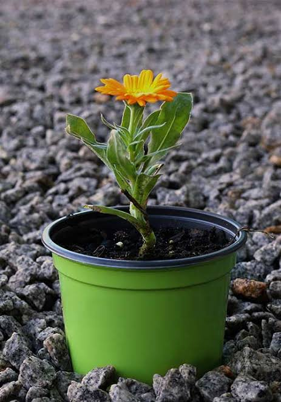

🌼 Identificação da Planta
Nome científico: Calendula officinalis
Nome popular: Calêndula, maravilha.
Família botânica: Asteraceae
Tipo de planta: Ornamental
Vaso na Horta Escolar Viva: 🌼 Amarelo
🌿 Características
A calêndula é uma planta ornamental conhecida por suas flores amarelas e alaranjadas, muito apreciada em jardins, hortas e espaços educativos.
Sua beleza ajuda a tornar o ambiente escolar mais colorido e favorece o aprendizado sobre a diversidade das plantas.
☀️ Como Cultivar
- ☀️ Prefere locais com boa luminosidade.
- 💧 Necessita de regas moderadas.
- 🌱 Gosta de solo fértil e bem drenado.
- 🌿 Pode ser cultivada em vasos, canteiros e pneus reciclados.
🐝 Importância para a Biodiversidade
Suas flores atraem abelhas e outros polinizadores, contribuindo para o equilíbrio do ambiente e para a preservação da biodiversidade.
Na Horta Escolar Viva, a calêndula auxilia os estudantes a compreenderem a importância da relação entre plantas e pequenos seres vivos.
🌼 Você Sabia?
A calêndula é conhecida popularmente como "maravilha" e suas flores possuem uma longa história de uso tradicional em cuidados naturais.
📱 Conheça mais sobre a Calêndula
Aponte a câmera do celular para o QR Code e descubra mais informações sobre esta planta.